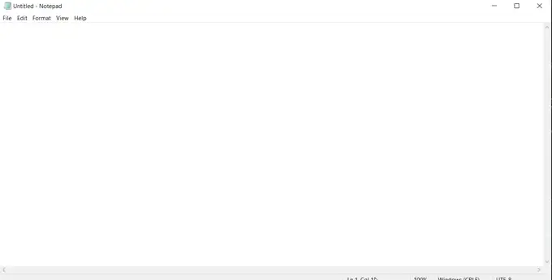

Hold F9, speak, release — your words are transcribed on your own PC and typed directly into whatever app you're focused in. No subscription, no cloud upload, no clipboard hijacking.
Free & open source (MIT) · runs 100% locally · Windows 10/11 · v1.6.1

The rest of the time it's out of sight: a small floating pill shows Recording/Transcribing, then it's back in the tray.
Built to feel invisible: it stays out of your way until you need it.
Hold F9 anywhere on your system: any app, any window. Release to transcribe, no toggling or mode switching.
Text is typed straight into the focused field, so your clipboard contents are never touched or overwritten.
Speech-to-text runs on your own CPU via faster-whisper. Your voice audio never leaves your computer.
Strips "um", "uh", "like", "you know" and fixes spacing and capitalization. Rule-based, no paid AI API.
Three steps, nothing to configure first.
Anywhere on Windows: a text editor, a browser, a chat app.
Talk naturally. VoxScribe captures your mic in the background.
Cleaned-up text is typed directly where your cursor is.
VoxScribe starts hidden in the system tray and stays there. No window to manage, no icon in your taskbar until you ask for one.
Most dictation apps run your voice through a cloud API and charge a subscription. VoxScribe runs everything locally, for free.
| VoxScribe | Typical cloud dictation tools | |
|---|---|---|
| Cost | Free | Monthly subscription |
| Where transcription runs | Locally on your PC | Uploaded to a cloud server |
| Works offline (after setup) | Yes | No, requires internet every time |
| Open source | Yes (MIT) | No |
Real feedback from people who've actually tried it.
I’ve used Dragon Medical, Dragon One, Dictation Daddy, VoiceTypr… I’m proud to say I’ve tried yours and I do like it.
Shared in a Reddit comment
One-time payment via Gumroad · 7-day refund · key delivered by email
No admin rights required.
Yes. VoxScribe is open source under the MIT license — no subscription, no paid tiers, no account required.
Only once, to download the speech-to-text model on first launch. After that, transcription works fully offline. Your voice audio is never uploaded anywhere.
Windows 10 and 11 only, for now.
Yes — VoxScribe auto-detects your default input device (including Bluetooth headsets) and adapts to its native sample rate.
See the SmartScreen note in the Install section above for exactly what's happening and what to click.
It uses faster-whisper's "small" model, which offers a solid balance of speed and accuracy on CPU for everyday dictation.